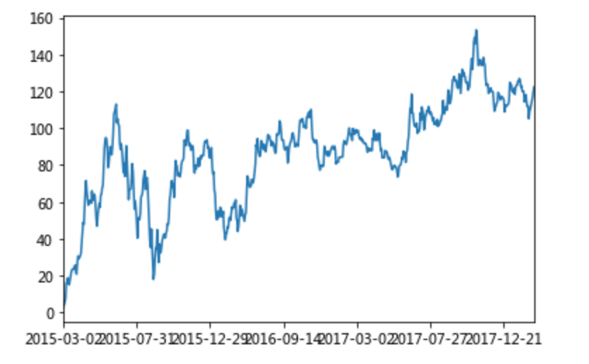

统计分析
学习目标
- 目标
- 使用describe完成综合统计
- 使用max完成最大值计算
- 使用min完成最小值计算
- 使用mean完成平均值计算
- 使用std完成标准差计算
- 使用idxmin、idxmax完成最大值最小值的索引
- 使用cumsum等实现累计分析
- 应用
- 股票每日数据的统计
假设我们需要知道这个股票的某个指标的平均值？？？？
1、基本统计分析函数
1.1、综合分析: describe()
# 计算平均值、标准差、最大值、最小值、分位数
data.describe()
1.2、单个函数分析
count |
Number of non-NA observations |
|---|---|
sum |
Sum of values |
mean |
Mean of values |
mad |
Mean absolute deviation |
median |
Arithmetic median of values |
min |
Minimum |
max |
Maximum |
mode |
Mode |
abs |
Absolute Value |
prod |
Product of values |
std |
Bessel-corrected sample standard deviation |
var |
Unbiased variance |
idxmax |
compute the index labels with the maximum |
idxmin |
compute the index labels with the minimum |
对于单个函数去进行统计的时候，坐标轴还是按照这些默认“index” (axis=0, default), “columns” (axis=1)指定
# 单独计算
data['close'].max()
# 对所有的列进行计算
data.max(0)
# 对所有的行进行计算
data.max(1)
# 求出最大值的位置
data.idxmax(axis=0)
# 求出最小值的位置
data.idxmin(axis=0)
2、累计统计分析函数
| 函数 | 作用 |
|---|---|
cumsum |
计算前1/2/3/…/n个数的和 |
cummax |
计算前1/2/3/…/n个数的最大值 |
cummin |
计算前1/2/3/…/n个数的最小值 |
cumprod |
计算前1/2/3/…/n个数的积 |
那么这些累计统计函数怎么用？

以上这些函数可以对series和dataframe操作
# 排序之后，进行累计求和
data = data.sort_index()
#计算累计函数
stock_rise = data['p_change']
# plot方法集成了前面直方图、条形图、饼图、折线图
stock_rise.cumsum()
那么如何让这个连续求和的结果更好的显示呢？

如果要使用plot函数，需要导入matplotlib
import matplotlib.pyplot as plt
stock_rise.cumsum().plot()
plt.show()